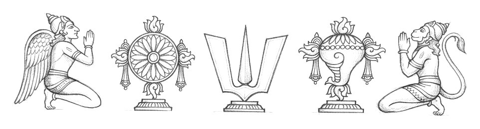

108 Divya Kshetrams
The sacred abodes of Lord Narayana — the 108 Divya Desams glorified by the twelve Azhwars in the four thousand verses of the Nalayira Divya Prabandham, the Tamil Veda.
Your yatra — 2 of 108 kshetrams visited
Visited kshetrams glow with a gold ring across the site — open Browse to continue your yatra.
Featured Kshetrams
The most celebrated of the 108 abodes — hover a card to plan your visit.
 DD #1
DD #1
Srirangam
Sri Ranganathaswamy Temple
Srirangam, Trichy · Tamil Nadu
 DD #2
DD #2
Thiruvengadam (Tirumala)
Sri Venkateswara Swamy Temple
Tirumala, Tirupati · Andhra Pradesh
 DD #3
DD #3
Thirukkachi (Kanchipuram — Atthigiri)
Sri Varadharaja Perumal Temple
Kanchipuram · Tamil Nadu
Srivilliputhur
Sri Vadapatrasayi (Andal) Temple
Srivilliputhur, Virudhunagar · Tamil Nadu
The Twelve Azhwars
Whose hymns sanctified these hills, groves and cities.
Azhwar Darshan - Featured


The Acharyas
Teachers who received, preserved and expounded the tradition.
Acharya Darshan - Featured